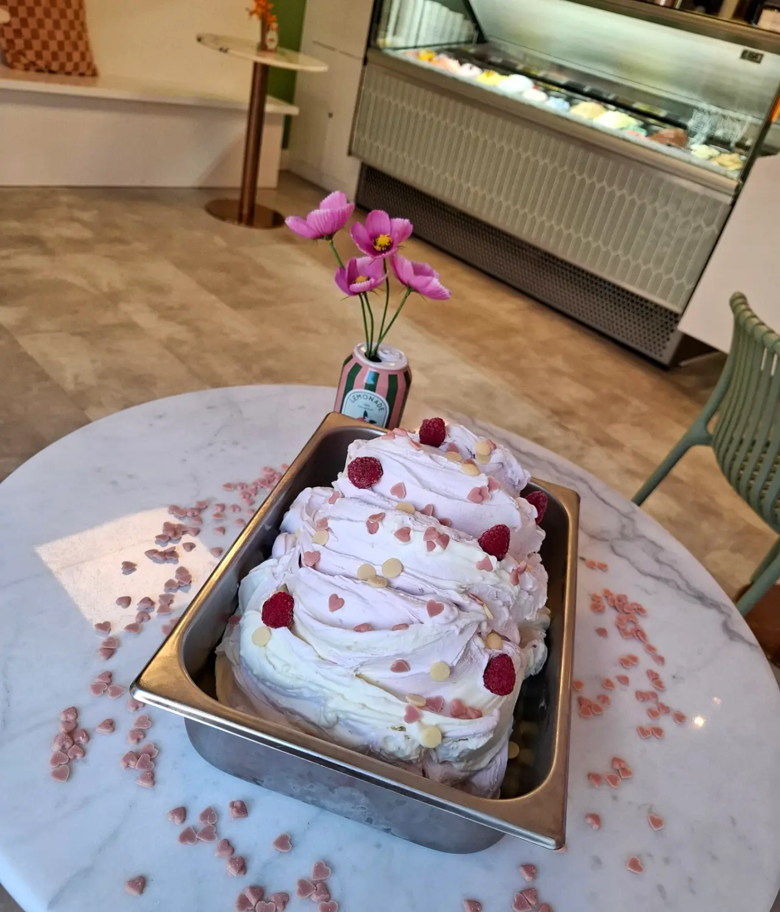
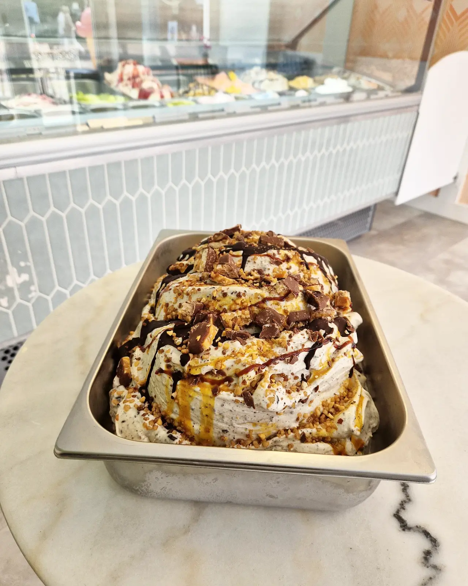
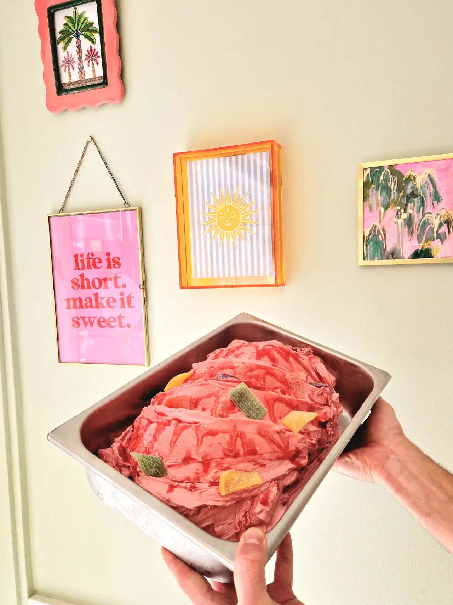
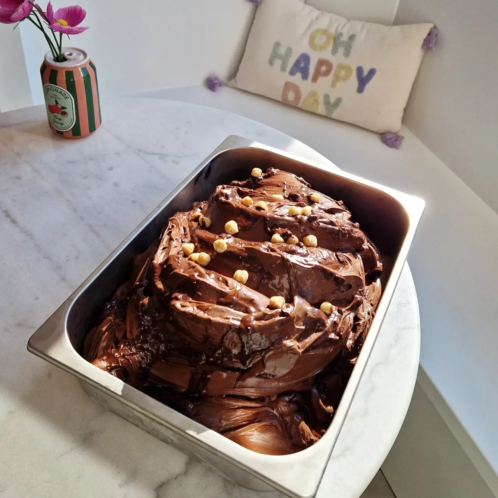
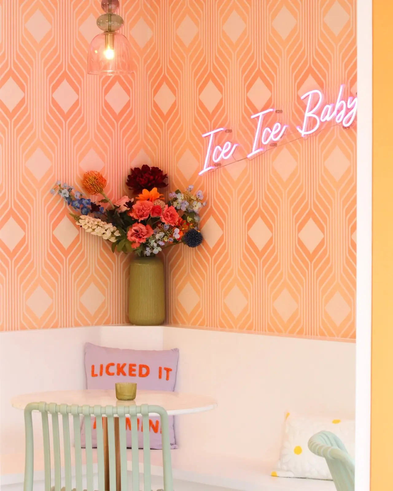
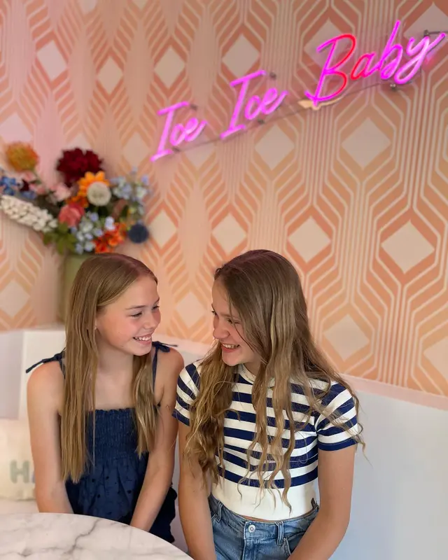
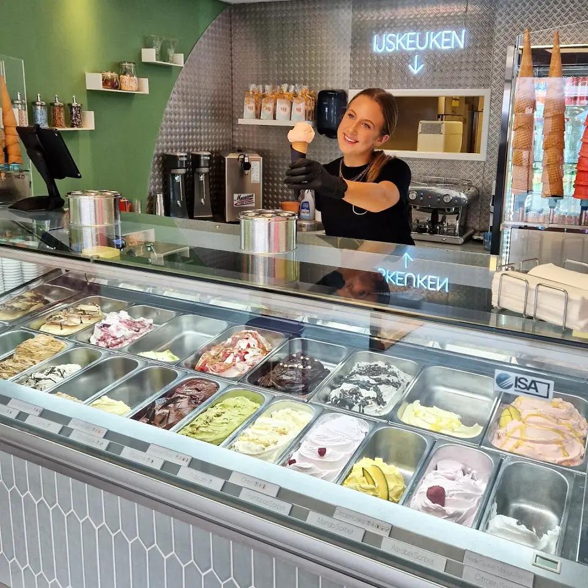
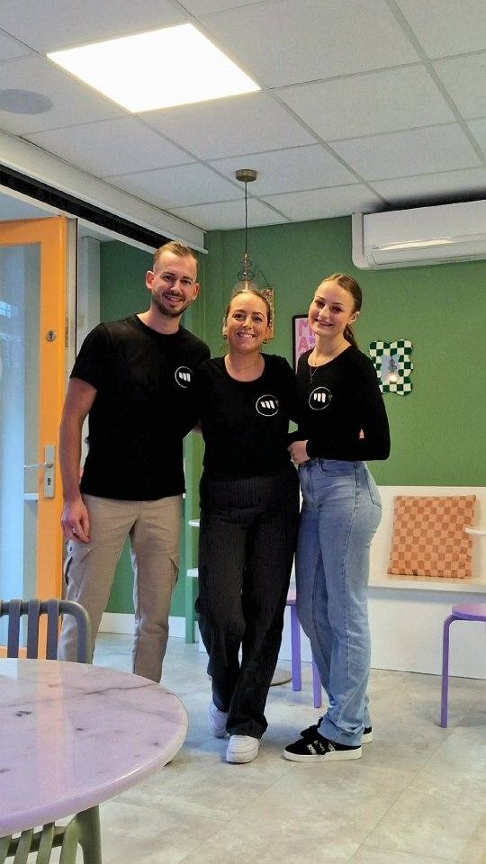
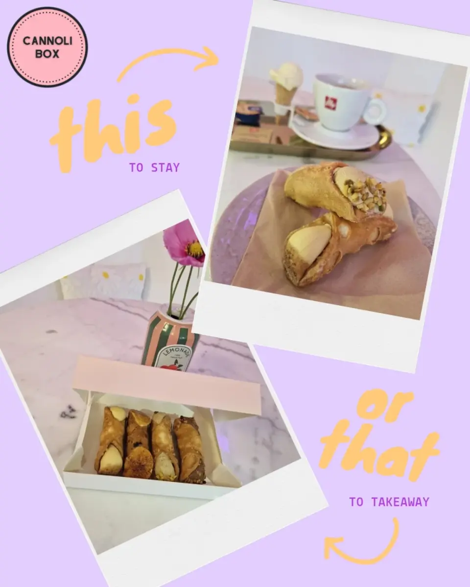

Life is short. Make it sweet.
Ambachtelijk gelato in Valkenswaard
Dagelijks vers gedraaid, altijd drie wisselsmaken en een flinke dosis good vibes. Dat is Muse.

Ice Ice Baby
Onze smaken

Snickers ijs
Romig chocolade-ijs met stukjes karamel, pinda en chocolade. Je favoriete reep nu in ijsvorm.
Bestseller
Zure matten ijs
Zoet, zuur en lekker verfrissend. Het iconische snoepje nu als romig ijs. Durf jij ‘m te proeven?
Voor de durvers
Black Heaven
Hazelnoot-choco. Na lang wachten eindelijk de Black Heaven terug in onze vitrine.
Terug op verzoekEn elke week staan er drie andere wisselsmaken in de vitrine.
Kom ze ontdekken arrow_forwardElke week drie andere wisselsmaken
Naast onze vaste smaken draaien we elke week drie nieuwe. Welke dat deze week zijn verklappen we niet. Dat is nou net het leuke.
De leukste plek van de markt.
“LICKED IT SO IT’S MINE”


Gezelligheid!
Ambacht met een moderne twist
Muse Icecreambar is een ambachtelijke ijssalon aan de Eindhovenseweg 12A in Valkenswaard, opgericht in 2023 door Daan en Daymi. We zijn gespecialiseerd in dagelijks vers gemaakt Italiaans gelato met naast de vaste favorieten altijd drie wisselende smaken, en serveren daarnaast authentieke cannoli en romige milkshakes.
Lokale liefhebbers en bezoekers uit de bredere Brabantse Kempen weten ons te vinden voor een moment dat verder gaat dan een ijsje. Of je nu houdt van klassiekers of gedurfde nieuwe combinaties, bij Muse vind je altijd jouw 'sweet spot'.


Meer dan alleen ijs: ontdek onze zoete extra's!
Van krokante cannoli tot romige milkshakes, we hebben alles om je dag op te fleuren.

Authentiek Italiaans
Wat onze klanten zeggen
0 beoordelingen op Google
“Ondanks dat ik vaak voor mijn ‘standaard’ ijsje ga, is het hier elke keer weer genieten. Wat ik extra waardeer, is dat vaste klanten worden herkend. We krijgen ons ijsje altijd met een gezellig praatje.”
Jenny Jacobs
Google Review
“Wat een mooie zaak!!! Heerlijk ijs, en koffie zeker de moeite waard. Ton en Angelique zijn fantastische mensen die altijd blij zijn als je komt, super aardig en gastvrij.”
Anita Navest
Google Review
“Wij komen hier iedere keer weer terug voor het lekkerste ijs uit de regio! Elke week is er wel een nieuwe smaak, heerlijk en ambachtelijk bereid. De eigenaren staan meestal zelf achter de balie en zijn altijd in voor een praatje. Kortom, een echte aanwinst voor Valkenswaard!”
D Miko
Google Review
Kom gezellig langs
Locatie
Eindhovenseweg 12A, 5554 AC Valkenswaard
Openingstijden
Di - Zo: 13:00 - 21:00
Ma: gesloten